bio.viz gsm.bio release review 2026-10-06
What v0.3.0 of bio.viz and gsm.bio changes, annotated
The group comparison chart is redrawn as three levels: every biomarker over time, one biomarker across its visits with R’s test under each visit, and one visit alone. gsm.bio draws the same three levels from R and stores every test, so a saved page shows them with no R running. Below, each change is shown on the live site with the numbers you should see.
3 levels in one chart made-up study: 200 participants, 12 biomarkers, 5 visits every test computed by R, held to desktop R bio.viz v0.3.0 and gsm.bio v0.3.0: candidates, not released
Where the two stand
- Both are release candidates, in front of the owner for review together, and neither is released: bio.viz v0.3.0-RC1 (bio.viz #111) and gsm.bio v0.3.0-RC1 (gsm.bio #61).
- Each was read by three independent reviewers first. What they found, and what was done about each finding, is in the comment headed “Review of” on each pull request.
- The review found two bugs in the group comparison, and both were fixed before the candidates were presented (bio.viz #112, #113): clicking a visit also selected visits the biomarker has no data at, and the trail’s buttons dropped the keyboard’s place. No number on this page changed.
- The links on this page go to bio.viz’s dev site, which serves the candidate. They become the root paths, such as
jwildfire.github.io/bio.viz/group-comparison/, once the release is tagged. - The stills were taken before the review’s fixes. Taken again on the two candidates, they differ only in the date a chart’s footnote prints, so they stand. The picture of gsm.bio’s reference page is the one taken again.
What to look at
- The group comparison opens on a tile for every biomarker. IL-6 is the tile whose two lines part, and R has been asked for nothing yet.
- Click the IL-6 tile. Under each visit is R’s test of the arms: p = 0.221 at Baseline, then p < 0.001 at every later visit.
- Open D-dimer and switch Adjust across visits to Holm. The smallest p-value goes from 0.014 to 0.071, and the row says which adjustment R made.
- Click Week 4 under the IL-6 picture. That visit opens alone, as v0.2.0 drew it: a difference in means of 1.544 (1.091 to 1.998).
- From R, the same three levels in one saved file, opened with the network off, with every test stored in the page.
Every biomarker: a trend tile each
Which biomarkers move differently between the groups? With no biomarker chosen, the chart draws one small tile per biomarker: a line for each group through the group’s median at every scheduled visit. The tiles print no statistic and ask R for nothing.
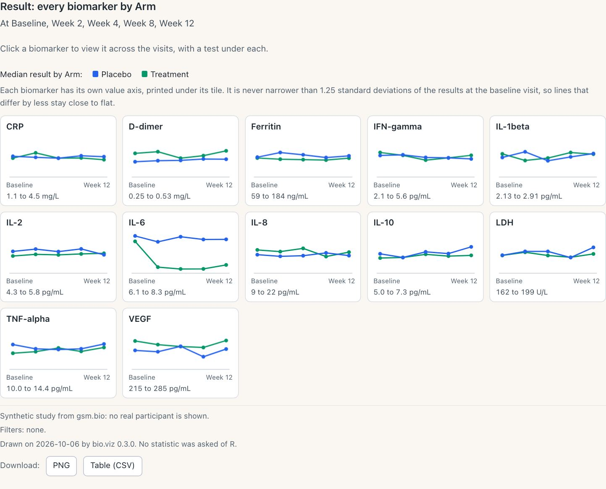
The view the chart opens on, by arm. One key above the tiles serves all of them, and each tile’s own value axis is printed under it.
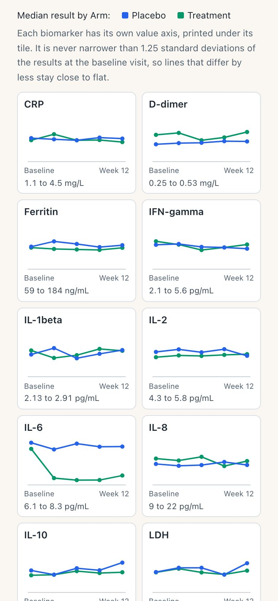
On a phone, two tiles to a row.
What you should see
- A tile for each of the 12 biomarkers, with a line for Placebo and a line for Treatment across the five visits.
- IL-6 is the tile whose lines part: the made-up study plants a treatment effect there. The other lines stay close to flat, because a tile’s axis is never narrower than a set spread of the baseline results.
- The chart’s own footnote ends “No statistic was asked of R.” Nothing of R is downloaded until a tile is opened.
- Colour by, Panel by and Draw as are switched off, and each says when it applies.
Try it
Open the group comparison- Switch Tiles draw from Medians to Means.
- Set Group by to Sex, then to Arm and sex for four lines a tile.
- Set Value to Change from baseline.
- Click the IL-6 tile, or press Enter on it.
One biomarker over time, with R’s test under each visit
A tile opens its biomarker across the visits in one picture: the groups side by side at each visit. A table under the axis, lined up with the visits, gives the number in each group and R’s test of the groups at each visit. R is asked once for the whole row.

IL-6 by arm. The trail above the chart names the level and leads back to the tiles. R’s notes under the picture say what each p-value is.
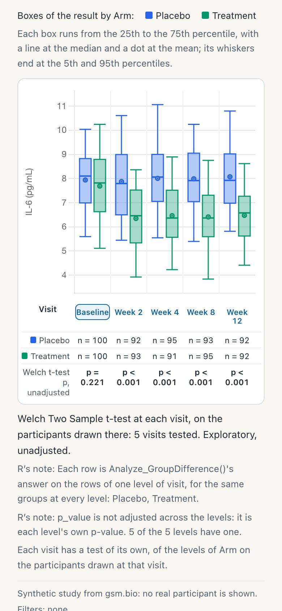
On a phone the picture and its table hold five visits.
What you should see
- Number in each arm, Baseline to Week 12. Placebo: 100, 92, 95, 93, 92. Treatment: 100, 93, 91, 95, 92.
- Welch t-test at each visit: p = 0.221 at Baseline, then p < 0.001 at Week 2, Week 4, Week 8 and Week 12.
- The row is labelled “p, unadjusted”, and R’s note says each visit’s p-value is its own.
- The first time, the row reads “Waiting for R…” and the line under it says what starting R costs: about 13 MB to download, once.
Try it
Open the group comparison- Click the IL-6 tile and wait for R the first time.
- Set Draw as to Means with standard errors.
- Set Test to Wilcoxon rank-sum test.
- Set Value to Change from baseline: Baseline is drawn and not tested.
Adjust across visits
Five visits are five tests. The Adjust across visits control has R adjust the p-values across the visits, by Holm or by Benjamini and Hochberg, and the row names the adjustment R made. D-dimer shows why it matters.
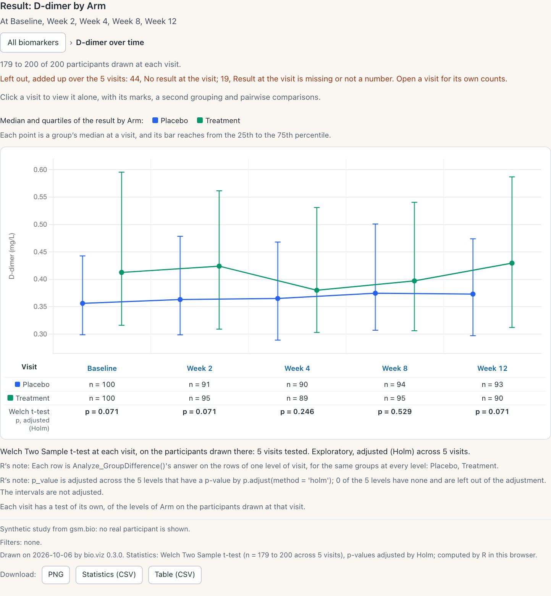
D-dimer as medians with quartiles, adjusted by Holm. Resting the pointer on a p-value shows the unadjusted one beside it.
What you should see
D-dimer by arm, the p-value at Baseline, Week 2, Week 4, Week 8 and Week 12:
- Unadjusted: 0.014, 0.017, 0.123, 0.529, 0.017.
- Holm: 0.071, 0.071, 0.246, 0.529, 0.071.
- Benjamini and Hochberg: 0.028, 0.028, 0.154, 0.529, 0.028.
- The row reads “p, adjusted (Holm)” or “p, adjusted (Benjamini-Hochberg)”, and R’s note names its own
p.adjust()call.
Try it
Open the group comparison- Click the D-dimer tile.
- Set Draw as to Medians with quartiles.
- Under Statistics, set Adjust across visits to Holm.
- Set it to Benjamini-Hochberg, then back to None.
One visit, opened from the picture
A visit’s name under the picture is a button, and a click anywhere in that visit’s part of the picture does the same. It opens that visit alone: the view v0.2.0 drew, with its marks, a second grouping, panels and pairwise comparisons.
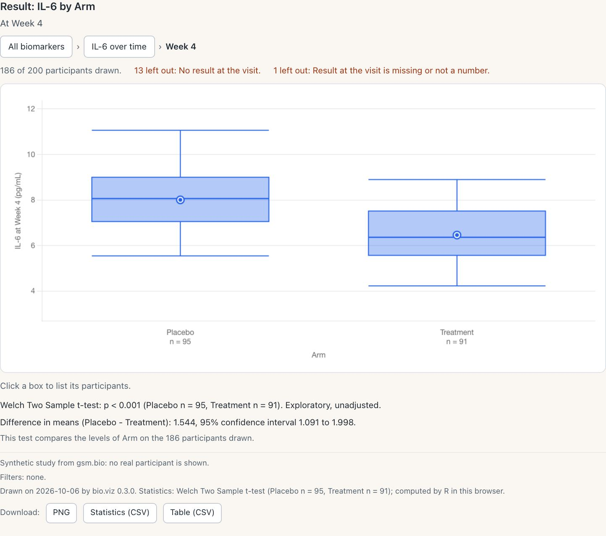
IL-6 at Week 4. The trail now has three steps, and each of the first two leads back up.
What you should see
- The trail reads All biomarkers, IL-6 over time, Week 4.
- 186 of 200 participants drawn: 95 on Placebo and 91 on Treatment. 13 have no result at the visit, and 1 has a result that is missing.
- Welch t-test p < 0.001, the same test the row under Week 4 printed.
- Difference in means, Placebo minus Treatment: 1.544 (1.091 to 1.998).
- Colour by, Panel by, and Draw as with boxes, violins and points, are switched on here.
Try it
Open the group comparison- Click the IL-6 tile, then Week 4 under the picture.
- Set Draw as to Violin, and Colour by to Sex.
- Click a box to list its participants.
- In the trail, click IL-6 over time, then All biomarkers.
Unscheduled visits are left out unless switched on
A visit named as unscheduled, or as an early termination, is no longer drawn at any level of the group comparison. A note above the chart says how many are left out and which, and an Unscheduled visits control switches them on. The three settings are the ones safety.viz’s results over time chart has.
How this still was made
The made-up study has no unscheduled visit: its five visits are all scheduled. So this still is of a second chart, typed into the page’s console, that names Week 2 as unscheduled with the setting unscheduled_visit_values. The study and every other setting are the demo’s.
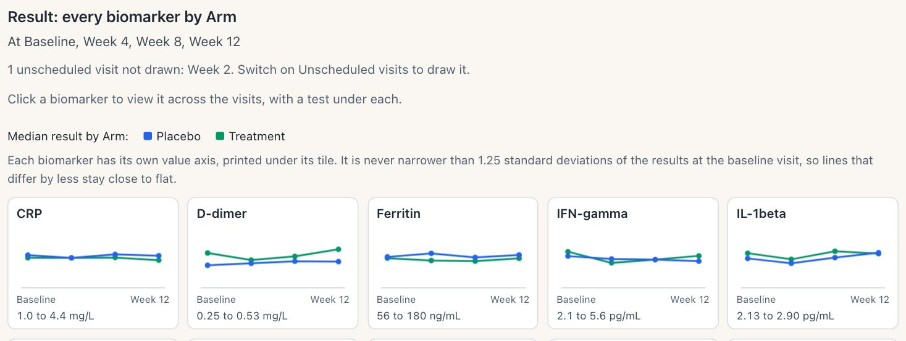
The note names the visit left out, and the title lists the four that are drawn.
What you should see
- The note: “1 unscheduled visit not drawn: Week 2. Switch on Unscheduled visits to draw it.”
- The Visit control offers four visits, not five.
- IL-6 opened over time has four visits and four tests: p = 0.221 at Baseline, then p < 0.001 at Week 4, Week 8 and Week 12.
- With Unscheduled visits switched on, Week 2 is drawn again and five visits are tested.
Try it
Open the group comparison- Open the browser’s console and paste the lines below.
- A second chart appears above the demo’s, with the note.
- Click its IL-6 tile.
- Under Display, tick Unscheduled visits.
const demo = BioVizDemo.groupComparison;
const study = await BioVizDemo.loadStudy('../data/synthetic-study/');
const el = document.createElement('div');
el.id = 'unscheduled';
document.querySelector('#chart').before(el);
const chart = BioViz.groupComparison('#unscheduled', {
...demo.settings,
unscheduled_visit_values: ['Week 2'],
connection: BioViz.r.createConnection({ browser: demo.browser })
});
await chart.init(demo.tables(study));Fisher’s exact test of a small table, and the site’s layout
Fisher’s exact test of a table with a small category
In v0.2.0 the cross-tabulation printed R’s reason and no number for any table with a row or a column of fewer than 5 participants, whichever test was chosen. Fisher’s exact test is exact at any count, so R now computes it for such a table. The chi-square test of the same table is still withheld.
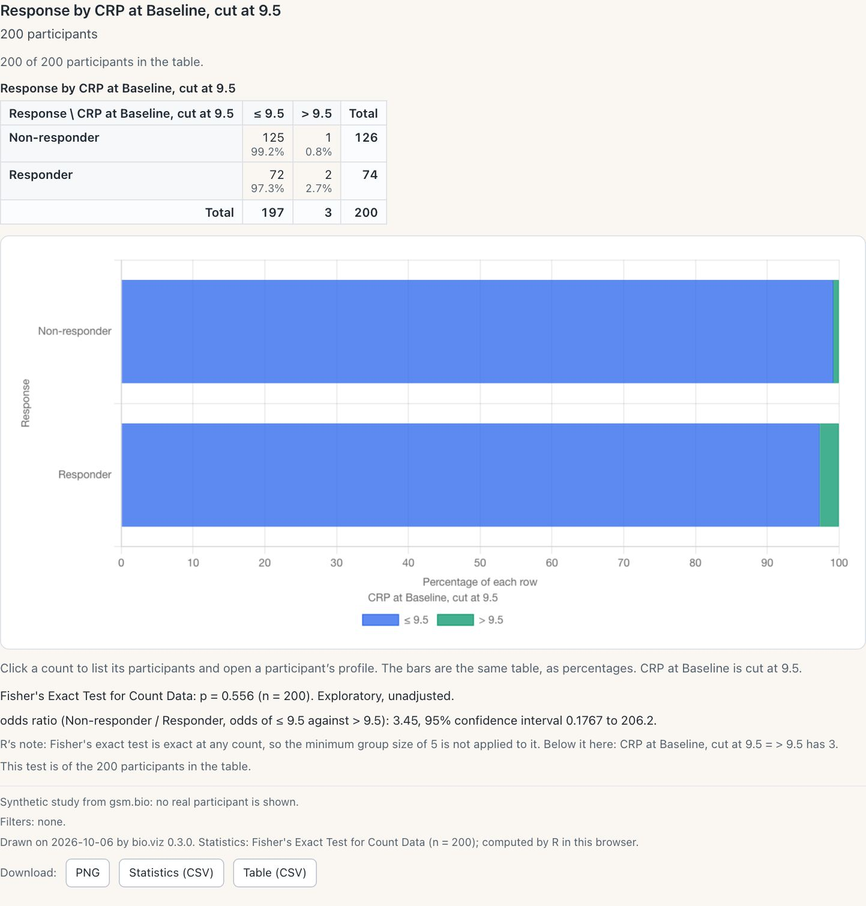
Three participants are above the cut. R’s note says the minimum group size was not applied and which category is below it, named by the table’s own variable.
How this still was made
The demo’s controls cut CRP at its median only, which leaves no small category. So this still is of a second chart, typed into the page’s console, that cuts CRP at 9.5. The study is the demo’s.
What you should see
- Response by CRP at Baseline, cut at 9.5. Non-responders: 125 and 1. Responders: 72 and 2.
- Fisher’s exact test: p = 0.556, with the odds ratio 3.45 (0.1767 to 206.2).
- R’s note: the minimum group size of 5 is not applied, and “> 9.5 has 3”.
- Switched to chi-square, the line reads “Not computed” with the same reason, and no number.
Try it
Open the cross-tabulation- Open the browser’s console and paste the lines below.
- A second chart appears above the demo’s. Wait for R.
- In it, switch Test to Chi-square test.
const demo = BioVizDemo.crossTab;
const study = await BioVizDemo.loadStudy('../data/synthetic-study/');
const el = document.createElement('div');
el.id = 'small';
document.querySelector('#chart').before(el);
const chart = BioViz.crossTab('#small', {
...demo.settings,
row_by: 'RESPONSE',
col_by: { measure: 'CRP', visit: 'Baseline', cut: [9.5] },
test: 'fisher',
connection: BioViz.r.createConnection({ browser: demo.browser })
});
await chart.init(demo.tables(study));The site is laid out as safety.viz’s is
Every page of bio.viz’s site now reads as a page of safety.viz’s: the header, the type, the colours, the gallery cards, a chart’s three tabs and the footer. The styles are safety.viz’s own stylesheet, copied with a record of the commit it came from. Nothing about a chart changes.
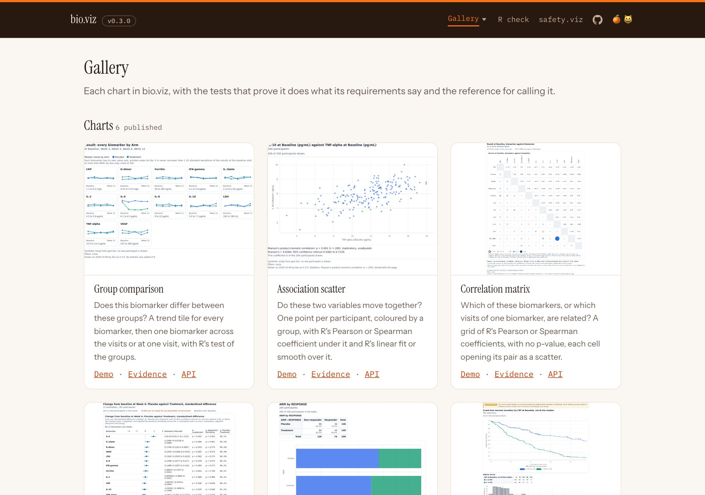
The gallery. Each card says what its chart is in two sentences, and the group comparison’s card shows the view it opens on.
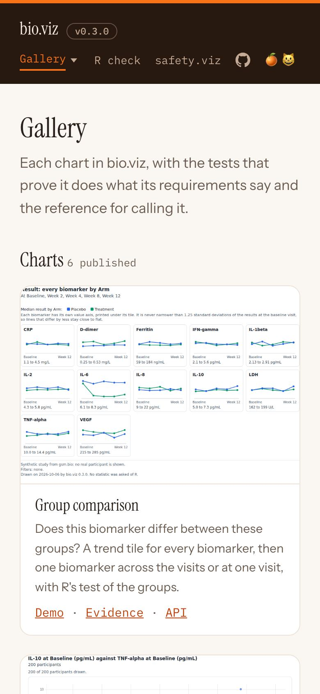
On a phone.
What you should see
- safety.viz’s header on every page, with a Gallery menu that lists every chart.
- 6 chart cards, each with Demo, Evidence and API links.
- On a chart’s page, three tabs: Live demo, Test evidence and API reference.
- On a phone, every page stays inside the screen.
Try it
Open the bio.viz gallery- Open the Gallery menu in the header and pick a chart.
- Move between its three tabs.
- Open the same page on a phone.
The three levels from R, with the tests stored in the page
gsm.bio’s Widget_GroupComparison() draws the group comparison at the same three levels. When the widget is made, R computes every test those levels will ask for and stores them in the page. A saved file then shows all three levels with no R and no network.
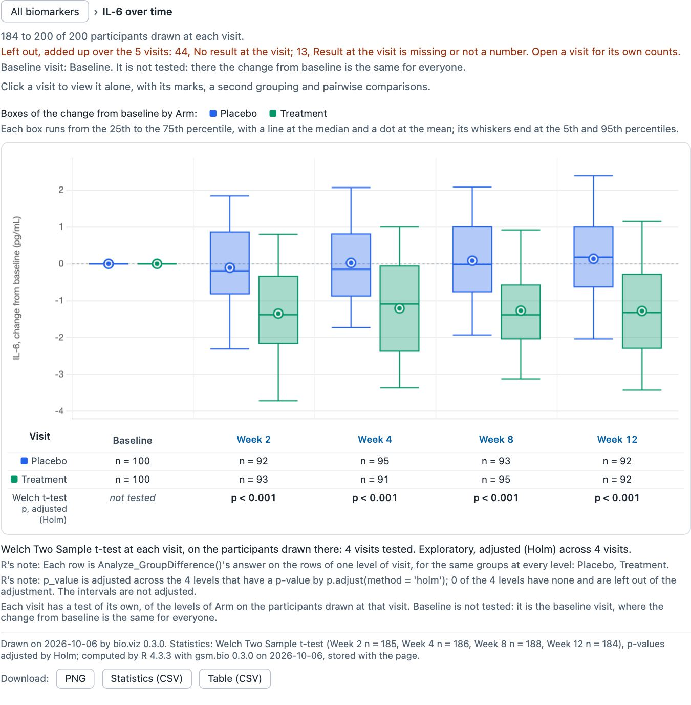
One level down in the saved file: IL-6’s change from baseline. Baseline is drawn and not tested, because there the change is the same for everyone.
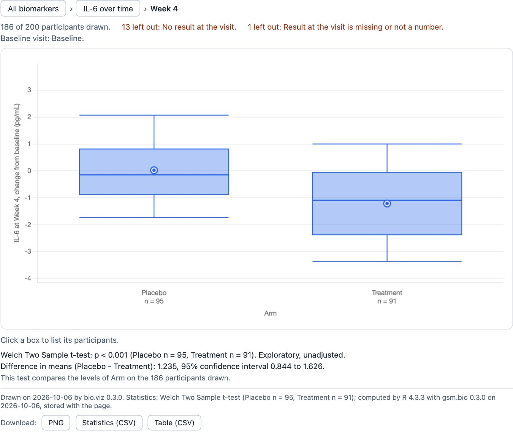
Two levels down: Week 4 alone, with its own stored test.
What you should see
- One file, a little under 3 MB. Opened from disk with the network off, it made no request for anything else.
- It opens on the 12 tiles. The IL-6 tile opens the change from baseline over time: Baseline “not tested”, then p < 0.001 at Week 2, Week 4, Week 8 and Week 12, unadjusted and after Holm.
- Week 4 alone: difference in means, Placebo minus Treatment, 1.235 (0.844 to 1.626), p < 0.001.
- The footnote: “computed by R 4.3.3 with gsm.bio 0.3.0 on 2026-10-06, stored with the page.”
- A view that was not computed says so. This call named Holm, so Benjamini-Hochberg reads “Statistics are unavailable for this view”. The page never shows one view’s numbers under another.
Try it in R
Widget_GroupComparison reference- On the reference page, scroll to the example: it is a live widget. Click its IL-6 tile, then Week 4.
- Or install gsm.bio from its
devbranch, where the candidate is, and run the code below. - Turn the network off and open the file.
library(gsm.bio)
lColumns <- list(
list(value_col = "ARM", label = "Arm"),
list(value_col = "SEX", label = "Sex"),
list(value_col = "RESPONSE", label = "Response")
)
w <- Widget_GroupComparison(
Synthetic_Results, Synthetic_Participants,
lSettings = list(
value_type = "change", baseline_visits = "Baseline", group_by = "ARM",
groups = lColumns, filters = lColumns, visit_adjustment = "holm"
)
)
htmlwidgets::saveWidget(w, "group-comparison.html", selfcontained = TRUE)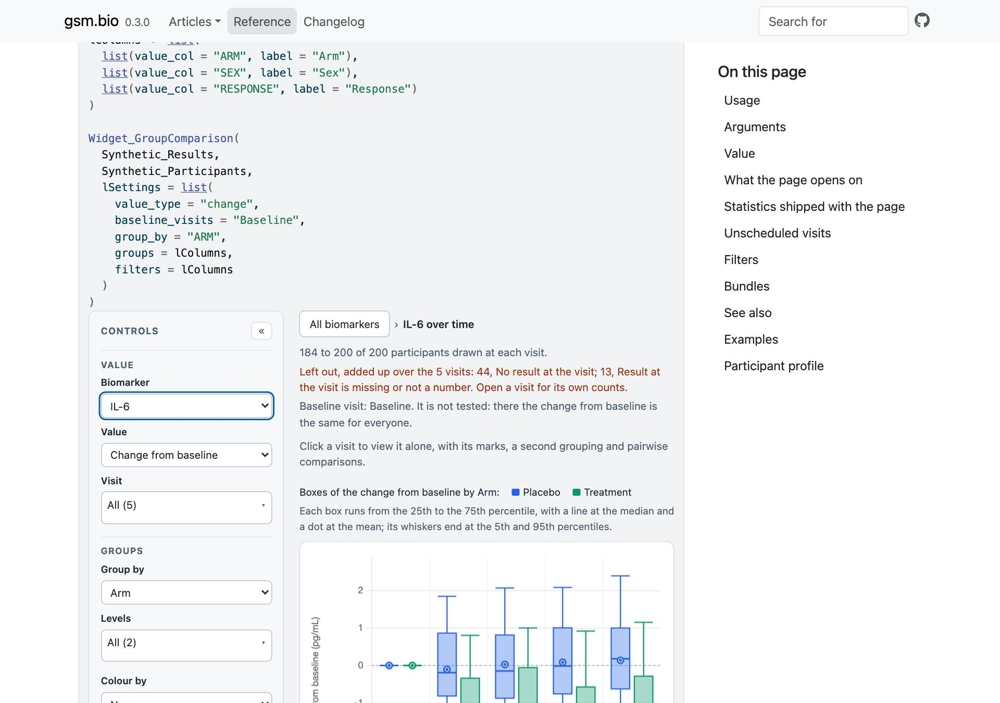
The reference page’s example is a live widget with its tests stored. Here it is one level down, on IL-6’s change from baseline.
A group test at every visit, in one call
Analyze_GroupDifferenceBy() is the function behind the row of tests. It runs the group test within each level of a column, such as each visit, and returns one row per level: the counts, the difference in means for two groups, R’s p-value, and the same p-value adjusted across the levels when a method is named.
d <- merge(
Synthetic_Results[Synthetic_Results$TEST == "D-dimer", ],
Synthetic_Participants[c("USUBJID", "ARM")]
)
Analyze_GroupDifferenceBy(
d, "STRESN", "ARM", "VISIT",
chrBy = c("Baseline", "Week 2", "Week 4", "Week 8", "Week 12"),
strPAdjust = "holm"
)$rows| by | n_1 | n_2 | estimate | p_unadjusted | p_value |
|---|---|---|---|---|---|
| Baseline | 100 | 100 | -0.0646 | 0.01421 | 0.07105 |
| Week 2 | 91 | 95 | -0.06335 | 0.01704 | 0.07105 |
| Week 4 | 90 | 89 | -0.04007 | 0.1229 | 0.2459 |
| Week 8 | 94 | 95 | -0.01728 | 0.5286 | 0.5286 |
| Week 12 | 93 | 90 | -0.06978 | 0.017 | 0.07105 |
D-dimer by arm, six of the columns the function returns, to four significant figures. n_1 is Placebo and n_2 Treatment; estimate is the difference in means, Placebo minus Treatment; p_value is adjusted by Holm. These are the p-values the chart printed in section 02.
What is not in this release
- The difference grid, a second opening view for the group comparison, is paused and is not in this release (obot.roadmap #371).
Found by the release review, and not fixed in this release
- Fisher’s exact test is not computed for larger tables, such as four categories by four with 200 participants: R stops on a limit of its own and the chart prints R’s message. This is not new in v0.3.0, and what to do about it is a statistical choice for the owner (gsm.bio #64).
- Over time, a visit where one of three or more groups has nobody reads “not computed”, while the same visit opened alone tests the groups that are there (bio.viz #114).
In the release, and not shown above
- The biomarker screen is listed again in safety.viz’s demo app (bio.viz #99, #100). That app is not one of the two sites this page walks.
- Each chart states how its own tables and headings look, so they are the same on every page (bio.viz #97, #103).
- gsm.bio’s static figure and table of the group comparison leave unscheduled visits out by the same rule (gsm.bio #53, #57).
- gsm.bio’s tests now open a saved widget in a headless browser with the network off and walk the three levels (gsm.bio #57).
Where to look further
- The release notes, in each repository’s
NEWS.md: bio.viz and gsm.bio. The release candidates, each with its review recorded in a comment headed “Review of”: bio.viz #111 and gsm.bio #61. - The group comparison’s test evidence and API reference.
- The requirements: the group comparison’s three levels (obot.roadmap #367) and the site’s layout (obot.roadmap #369).
- The v0.2.0 demo, for the cross-tabulation, survival curves and results out of the browser.